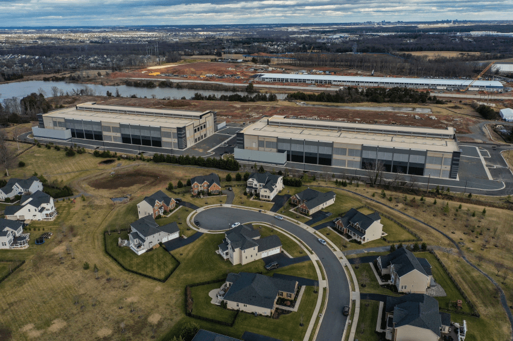
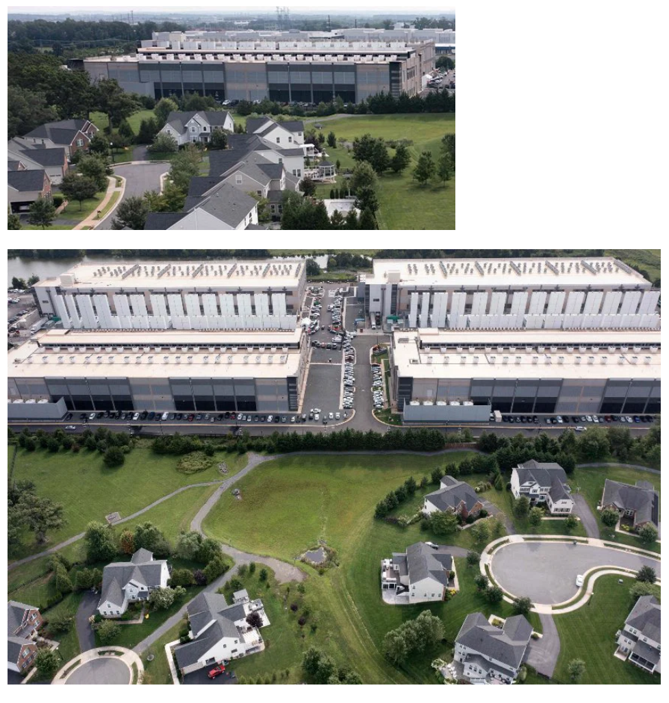

https://www.fmkorea.com/best/10523847215
https://theqoo.net/square/4397581410


저런 소음 유발하는 시설이 주거지 근방에 건설함
(버지니아에서는 데이터 센터의 3분의 1이 주거지에서 200피트 이내에 위치)
+ 지역경제에 도움 안됨
https://www.fmkorea.com/best/10523847215
https://theqoo.net/square/4397581410


저런 소음 유발하는 시설이 주거지 근방에 건설함
(버지니아에서는 데이터 센터의 3분의 1이 주거지에서 200피트 이내에 위치)
+ 지역경제에 도움 안됨
ㅁㅊㄴ...
아래 주거지 사진은 아무리 봐도 부자동네인데 저게 맞나?
혹시 어딜봐서 아무리봐도 부자동네임? 아무리봐도 수영장도 없는 개 깡촌인데
Lot, sqft, garage만 봐도 밀리언 넘음
글쿠먼
오 expnsv 하구만
알려줘서 Thk 해요
왜 한글로 써도 될걸 영어씀? 가난하게 자라거나 못배움?
규제 이야기 나올만 하네
와 공기맑아서 지평선까지 시원하게 보이는거며
넓은 들판이며.. 존나 낭만인데
거기에 저딴거 들어오면 나같아도 뒤집어질듯
존나 큰 발열체
로비가 합법이라 진짜 정도가 없는
땅도 넓은데 주거지 옆은 뭐임
전기랑 물이 많이 필요한데 빈 땅은 수도나 송전 인프라 자기들 돈으로 만들어야 하니까 그건 싫대
주택가는 그런 인프라가 이미 있으니까
뭔 ㅂㅅ 같은 사유네 ㅋㅋㅋㅋㅋㅋㅋ 조지긴 해야겠다
인프라까지 만들면서 데이터 센터 세우면 구독료 두배 이벤트 해야겠네
기존 공단이나 그런곳이 훨씬 공업용수나 전력인프라가 잘되어있는거 아님?
전기랑 물이 존나 필요함 > 근데 주거지에는 당연히 그게 다 있음 > 쌀먹 드가자
데이터 센터는 외곽에 지어야 하니까
지랄하게도 생겼네.
와 존나 시끄럽구나
이건 베토벤도 화내겠노
ㅅㅂㅋㅋㅋㅋㅋㅋㅋ
그냥 인프라 깔기 싫다고 거주지옆에 공장 박아버린 꼴이네 심시티에서도 저렇겐 안하겠다
지하로 넣을 순 없나
방음벽을 세우면 되는거 아니야?
수도랑 전기 쌀먹하려고 주택가에 짓는다는데 방음벽 세울 돈도 아깝겠지
방음벽보다 벌금이 쌈 ㅎㅎ
미관때문에 법에 걸려서 안되는 것으로 앎
소리는 위로가는거라 펜스 설치하면 좀 줄일수 있을텐데
방음벽조차 없어? 지리네
생각했던 것보다 훨씬 시끄럽네 저러면 근처 사는 사람들은 노이로제 걸리지...
사람들이 왜 데이터 센터를 외곽에 안 지었냐고 하는데 미국은 저런 거주지가 외곽임. 저것보다 더 외곽으로 나가면 걍 ㄹㅇ 아무것도 없음.
저건 좀 심하긴 하네ㅋㅋ
제조업이 망해서 공단이 없나?
선동이니 뭐니 해도 24년부터 저거가지고 말 많긴했지
가뜩이나 목조주택이라 저 소음 그냥 그대로 집안에 꽂힌다고 보면 됨 ㅋㅋㅋㅋ
지역사회에서는 저거 깔자는새끼가 역적수준임 ㅋㅋㅋ
시벌 저건 너무한거 아니냐 규제할만 하네